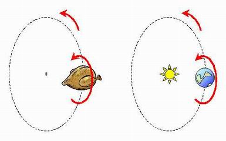

| inicio | | | | | @ | ||
Pollo
Al director de la revista Anteojito, García Ferré, le disgustó por cruenta una ingeniosa analogía de Jorge Sztrajman para explicar la traslación y la rotación de la Tierra, en la que el destacado físico comparaba los movimientos de nuestro planeta con los de un pollo ensartado en un asador. Cuando borraron esa referencia se pasaron por alto una mención, y la revista publicó un sesudo artículo de astronomía en el que de pronto se hablaba de un pollo que no venía para nada a cuento.
El caso se conoce como el pollo de Sztrajman - Ferré.

| Publicado originalmente en http://www.elistas.net/lista/divagaciones/archivo/indice/41/msg/53/. Se permite su reproducción citando la fuente. Última actualización nov-2017. Buenos Aires, Argentina. |